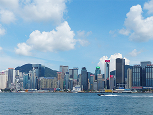
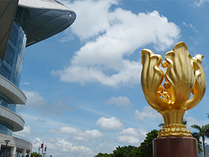
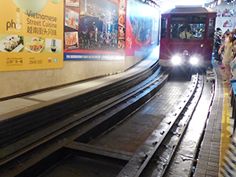
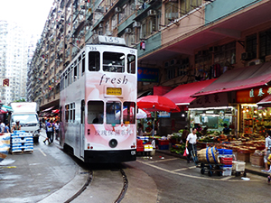
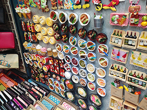

景點特搜
維多利亞港│香港會議展覽中心│太平山頂│春秧街│女人街維多利亞港
維多利亞港位於香港島和九龍半島之間，由於港闊水深，因而被列為「世界三大天然良港」，更有「東方之珠」及「世界三大夜景」之美譽。沿岸除了有摩天大廈的景色外，還可以看到著名的星光大道、天星小輪、尖沙咀鐘樓...等景緻，而夜晚結合燈光與音樂的幻彩詠香江秀，更是不能錯過的世界級音樂匯演。

香港會議展覽中心
香港會議展覽中心是香港的主要大型會議及展覽場地，位於香港島灣仔北岸，是香港地標之一，之前更在這裡完成了香港政權回歸中國的交接儀式。建築外型酷似歌劇院，大型落地窗展現都會時尚感，而展覽中心外是著名的金紫荊廣場及回歸紀念碑。

太平山頂
太平山，是香港最受歡迎也是必遊的景點。除了可以搭乘山頂纜車登山，感受沿路陡峭的斜坡與一直後退的樹林及高樓大廈外，傍晚時刻到太平山頂，還可以透過凌霄閣頂層的摩天台一覽港島風景，瞬間體驗整個城市在白天與夜晚的景觀變化。

春秧街
春秧街有「小福建」、「小上海」之稱，街道佈滿小販，兩旁樓宇地下則有專門售賣福建和上海等地道食物的店舖。不但是香港有趣的街道之一，叮叮車走在市場裡的特殊景像，四周充斥著熱鬧的叫賣聲、魚肉味或切肉聲...等畫面更深具特色，常吸引大批觀光客及攝影人士駐足留影。

女人街
女人街這裡的攤販，早期多販售跟女人有關的服裝與用品，故而得其名。目前已成為香港人及外地遊客的購物地點，而所賣的物品也趨向多元化，包括各種家居用品、男女服裝、化妝品、手袋、手錶、飾物、玩具、香薰...等，由於貨物均物美價廉，故能吸引大量人士到訪和購物。

香港旅遊發展局
網址：http://www.discoverhongkong.com/
交通事項查詢電子信箱:tdenq@td.gov.hk